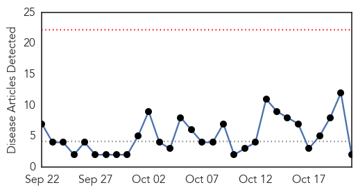
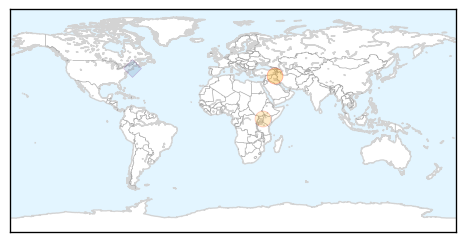

Hepatitis
30-Day Web Trend
4 alerts, 6 warnings

30-Day Twitter Trend
0 alerts, 0 warnings

Article Locations
Article Confidences

Top Articles:
Top Tweets:
-
No tweets found for Oct 21, 2015
Cholera
30-Day Web Trend
0 alerts, 0 warnings

30-Day Twitter Trend
8 alerts, 0 warnings
Article Locations
Article Confidences
Top Articles:
Top Tweets:
- 0.657
- RT: Kudos for standing up/urging UN accountability to Haiti's cholera victims! Where's & @B…
- 0.569
- RT: 5 ans sans justice pour le cholera c’est 5 ans de trop. @UN FaceJustice maintenant! http://t.co/8ktGRUCCCK